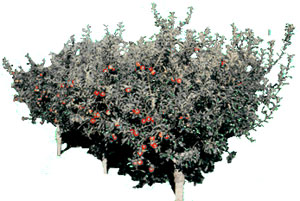

The Seasons of the Garden
Midsummer's merciless sun scorches down from the cloudless skies, and parched plants slowly lower their leaves as the earth bakes beneath them. When dusk descends and the first tentative fireflies flicker against the darkening horizon, water the soil to slake its thirst . . . and resolve that next year you'll make (and use!) much more moisture-holding mulch.
The rootstocks commonly used to create dwarf apple trees were developed, over a number of years, in England . . . first at the East Malling Research Station and later at the Merton Station (which explains why the prefixes M-or EM -and MM are used to designate the different varieties). These rootstocks can all reduce the tree size (but not the fruit size!) of a variety that's grafted or budded onto them . . . and they do so by simply limiting the amount of food that the tree gets. This same factor induces early bearing (often three or four years sooner than that of full-sized trees) by reducing the amount of vegetative growth. It seems that while there's leaf and limb growing to be done, the apple tree postpones setting fruit.
Depending on what rootstock you select and what apple variety you're budding, the eventual height of the tree can range from 6 to 25 feet. You should consider several factors in choosing one of the five rootstocks generally available: [1] the amount of land you can devote to apples and the number of trees you hope to have, [2] the nature and fertility of your soil, [3] the types of insects and diseases present, and [4] the vigor of the apple variety (or varieties) you want to grow. Here's a listing-arranged in order of dwarfing effect, from most to least-of a variety of popular rootstocks . . . and some of their advantages and disadvantages.
M-27 is really sort of a ringer: Although it's been under development for several years, it isn't yet available commercially. This superdwarfing rootstock produces container-sized apple trees that stand a minuscule 4 feet tall. Work is now being done on propagating the rootstock by tissue culture. When that's a reality, supplies should increase rapidly.
M-9 has the greatest dwarfing effect of any widely available rootstock. Trees grafted or budded onto it will usually grow to about 30% of their normal size, which means that the M-9 dwarf trees are between 6 and 10 feet tall at maturity. Apples will usually begin to bear in two or three years, and yield about 60 pounds of fruit when they're fully grown. You can cram these dwarfs pretty close, too . . . they're commonly grown on 10- or 12-foot centers. The rootstocks do have some drawbacks, though. For one thing, they tend to have a weak root system and to be somewhat brittle, so it's necessary to stake the trees to keep them from blowing over and perhaps snapping where they're grafted. (Many professionals bud these trees high-about 12 inches from the rootstock's original ground level-so they can be planted deeply for better anchoring.)
Apples budded to M-9 are susceptible to attack by nematodes, woolly aphids, and fireblight, so think twice about choosing this rootstock if any of these nasties are about. On the other hand, M-9 trees are resistant to collar rot, which means that they'll usually do reasonably well in wet or clayey soil. (Be sure to clear an area at least 2 feet in diameter when you plant one of these little fellers . . . mulch to keep weeds and grass from stealing all the food in the soil . . . and be prepared to irrigate M-9 trees during dry spells.)
M-26 is second to M-9 in dwarfing capacity. Trees on this rootstock usually grow about 40% of the standard height, producing dwarfs that range from 8 to 12 feet tall. The M-26 root system is stronger than that of M-9 (though staking is still necessary). The tree is hardier, too, and growth is more vigorous . . . especially in soils with poor fertility. M-26 is susceptible to collar rot, though (so don't plant it in wet or clayey soil), and fireblight and woolly aphids are also problems. It's best to place buds high, and to set out these dwarfs on a 10' X 18' grid
M-7A (the letter "A" indicates that this is a virusfree sibling of the original M-7) is a semi-dwarfing rootstock . . . producing sturdy, winter-hardy trees that are about 50% of standard size. These productive, early-bearing, 12- to 15-foot beauties should each produce over 100 pounds of fruit a year at maturity. Apples on M7A do well in most soils, even in clay. The rootstock is susceptible to suckering, but that tendency can be defeated if you bud high and plant deep. M-7A's aren't very drought-resistant and are susceptible to woolly aphids. They should be planted on a 12' X 20' grid.
MM-106 produces trees that are about 60% of normal size (usually 12 to 18 feet tall). This early-bearing, drought-tolerant rootstock is excellent for the naturally smaller, slow-growing spur apple varieties. M-106 trees are productive, root better than M-7A trees, and do not sucker. They are vulnerable to collar rot, though . . . so -once again-keep them away from wet or clayey soils. And if you're cursed with early autumn frosts, keep in mind that M-106 trees harden off late and are thus susceptible to freeze damage. Space these semidwarfs on a 14' X 22' grid.
M-111 produces the largest apple trees of our group of rootstocks: They attain about 70% of standard, or 15 to 22 feet. The roots anchor well, are very droughttolerant, and do not often sucker. M-111 resists woolly aphids and collar rot, too, and is good in all types of soil. Spur-type trees do especially well when grafted to M-111, but-as is the case with all varieties grafted to it-will fruit more slowly than they would on any of the rootstocks above. Allow the big dwarfs an 18' X 24' spacing.
CHOOSE WISELY
When you're selecting a rootstock/scion combination, remember that the strongest varieties should be matched to the most radically dwarfing rootstocks . . . and that the better your soil is, the more you need to use a highly dwarfing root. Among the stronger-growing apples are (in order of decreasing vigor) Northern Spy, Mutsu, Summer Rambo, nonspur McIntosh, Empire, Stayman, Red Delicious, Red York, Greening, Winesap, Beacon, Cortland, and Lodi. Weak growers (in order of decreasing strength) are Yellow Delicious, Jonathan, Rome, Macoun, Ida Red, and the spur varieties.
If you're planning to budgraft onto either an apple branch or an already growing seedling or dwarfing rootstock, you can do so right away. But if you're ordering one of the Malling or Malling-Merton rootstocks now, you might have to plant the youngsters in a nurse bed in the garden for a year's growing. The dwarfers should, you see, be at least a quarter-inch in diameter at the point of the graft. If your delivered pieces are a bit too thin, simply plant the rootstocks in a protected bed, spacing them about a foot apart. Then, come next July, you'll have a supply of vigorous candidates for bud grafting.
THEY'RE ROOTING FOR YOU
Dwarfing and semidwarfing rootstocks are available from several sources. Mellingers (Dept. TMEN, 2310 West South Range, North Lima, Ohio 44452, catalog free) offers M-7 at five for $7.15, MM-106 at five for $7.75, and M-26 at five for $9.75. Lee-Land Nursery (Dept. TMEN, Box 223, North Kingsville, Ohio 44068, catalog free) has M-9 and M-26 for $1.75 each, while M-7A, MM-106, and MM-111 sell for $1.50 each. Lee-Land also has interstem dwarfing rootstocks, which unite the strong dwarfing qualities of M-9 with the sturdy root systems of MM-111 or MM-106. These cost $4.00 each. Southmeadow Fruit Gardens (Dept. TMEN, Lakeside, Michigan 49116, price and variety list free, encyclopedic catalog of fruit varieties $8.00 . . . and worth it as a permanent reference) offers the following in packages of ten at $15 per package: M-2, M7, M-9, M-26, MM-104, MM106, and MM-111. Both Mellingers and Lee-Land can supply you with grafting equipment, including knives and rubber budding bands.
EDITOR'S NOTE: Orchard ists interested in grafting an antique apple scion onto a dwarfing rootstock might want to read the article on page 130 of MOTHER NO. 63. And we think you'll find the treeplanting center spread in issue 65 to be a valuable guide. See page 104 to order back issues.
Have a Bud
The summer months-from mid-July through August-are the best times to expand your apple orchard, using a technique known as bud grafting (or budding). You'll need a rootstock (see the preceding guide), or an apple branch of about pencil thickness, on which to make the bud graft . . . and scions, or budsticks (that is, young branches of the desired variety, cut from this year's growth and kept constantly moist until used). You'll also need a razor-sharp blade (an X-acto-brand knife works well) and a supply of commercially produced rubber budding bands or budding tape.
This particular grafting technique involves inserting a vegetative bud cut from the apple variety you want to propagate into a T-shaped flap that's been scored in the rootstock or branch. The cambium layers of the bud and the rootstock will grow together, and the apple variety can begin life on a new understructure.
Here's how to do it: First, select a vigorously growing branch of the apple type you'd like to produce. (If you want an unusual variety, don't despair . . . you can order any of 79 different scions sold by the Worcester County Horticultural Society for only $1.25 each. For a list of those available, send a self-addressed, stamped envelope to Mrs. Mason, WCHS, Dept. TMEN, 30 Elm Street, Worcester, Massachusetts 01608.) Cut the branch and remove the leaves from this budstick, leaving about a quarter-inch of each leaf stem attached to the stick (they'll make useful handles). Next, make a T-shaped cut into the bark (but not into the wood) of the rootstock or branch you'll be grafting onto. If you're working with rootstock, make the cut at a point 8 to 12 inches above ground level, so you'll be able to transplant the grafted tree deep while still keeping the bud graft 2 inches above the soil (that will prevent the grafted variety from rooting, which would short-circuit the rootstock's dwarfing action). The crossbar of the T-cut should be about 1/2 inch and the descender about 1 inch long.
Now, carefully peel back the bark that's been loosened by the T-shaped cut, turn to the budstick, and select a large, healthy bud (they're in the leaf axils) from the center of the stick. Using your knife, slice off the bud and a surrounding 3/i4-inch shield of bark. Trim the top of the bud shield flat, grasp it by the leaf stem, and insert it into the cut in the rootstock or branch. Make sure that the trimmed top of the shield butts firmly against the crossbar of the "T". Then fold the two bark flaps over the shield, and wrap the graft-above and below the bud-with budding tape or a rubber budding band, to protect the union from moving or drying out.
If you're lucky, the bud should "take" within two or three weeks, at which time the tape or band can be removed. You'll know that you've succeeded if the stem portion sloughs off while the bud remains fat and healthy. However, should both stem and bud become puckered and sullen, you'll have to try again. (It's imperative, though, to keep the budstick cool and moist between attempts in case you do need to make another graft.)
Don't expect any growth from a new graft during its first year . . . usually the bud remains dormant until the following spring. When growth does commence, trim back the rootstock to 3 or 4 inches above the graft. Later in the season, when there's been significant growth from the grafted bud, you can trim the rootstock close to its new leader.
There are two solid advantages to "making" your own apple trees, using this technique. First, it's inexpensive: You can graft dwarfed trees for under $4.00 each, even if you buy both rootstock and scionwood . . . and that's a 50% saving over the price of most commercial trees. Second, you can custom-tailor the fruitbearer to your particular needs . . . that is, you can select the proper rootstock for your soil conditions and the vigor of the variety you're growing, and you can determine the approximate height of the finished tree. You could even make your own 5-in-1 variety, bearing a quintet of antique apples!
Gleanings
If the material about budding in this issue's column has you raring to go, you're probably a good candidate for membership in the North American Fruit Explorers (NAFEX), a group of amateurs (in the best sense of the word) devoted to exchanging information about growing fruits. You can get membership information from the treasurer: Ray K. Walker, Dept. TMEN, Box 711, St. Louis, Missouri 63188. Send a self-addressed, stamped envelope with your request, please .... Sterling Publishing continues to issue the superb Blandford horticultural books from Britain. The latest is Mervyn Kessell's Rhododendrons and Azaleas (available in many bookstores for $17.50), with plenty of hints on cultivation, propagation, and pruning. There are over 60 color photos, too .... Garden Way has published a revised edition of an old friend, Dick Raymond's Down-to-Earth Vegetable Gardening Know-How (also found at many bookstores, for $7.95). The book is stuffed with good advice, pictures, and tips from readers . . . and the chart on green manures (pages 82 and 83) alone is worth the price of admission.
|
 |
|
|